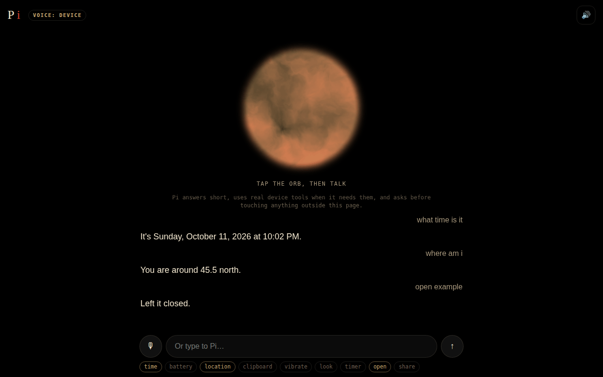

It degrades, it doesn't go quiet
Three voices tried in order: a neural voice, the device's own voices, then text. Drop the signal and Pi keeps talking.
A voice assistant that runs on the phone itself, not in an app store and not in someone else's cloud. Nobody is home on purpose: no persona, only capability. Try the browser version right here.
Tap the orb and talk · or type · asks before touching anything outside the page

The phone build runs in Termux on Android. Chat text goes to a large model because a 70B model won't fit in a pocket; everything else stays put. Camera frames and vision run locally on moondream, and GPS, the clipboard, contacts, the call log and every device action never leave the device.
The browser version below keeps the character with what a browser can do: a handful of real device tools, Hive's free models for the thinking, and the same orb.
Three voices tried in order: a neural voice, the device's own voices, then text. Drop the signal and Pi keeps talking.
22 tools on the phone build through Termux:API; in the browser, time, battery, location, clipboard, vibration, the camera, timers, links and sharing.
Anything that reaches outside waits behind a confirmation keyed to a token, so a stray “no” in the next sentence can't deny something already approved.
Every version of assistant-voice was cut, one session at a time: answer, be brief, don't apologise, don't offer more help. The inverse of Weaver.
Termux from F-Droid (the Play Store build silently lacks camera capture), Termux:API, proot Ubuntu, Flask on :8420 with streaming, Groq for chat with Ollama as the fallback, moondream for local vision, and the orb's glow wired to real speech amplitude.
Speech recognition on the device where it exists (Whisper through Hive otherwise), Hive's free models with Pi's terse instructions, and Hive's neural voice with the browser's voices as the fallback.
The browser version can't read contacts or run shell actions, and its voice and chat run on Hive's daily free allowance. The phone build is the full thing.
No self. Only capability.
more in ai & mindskeep scrolling · it opens right here